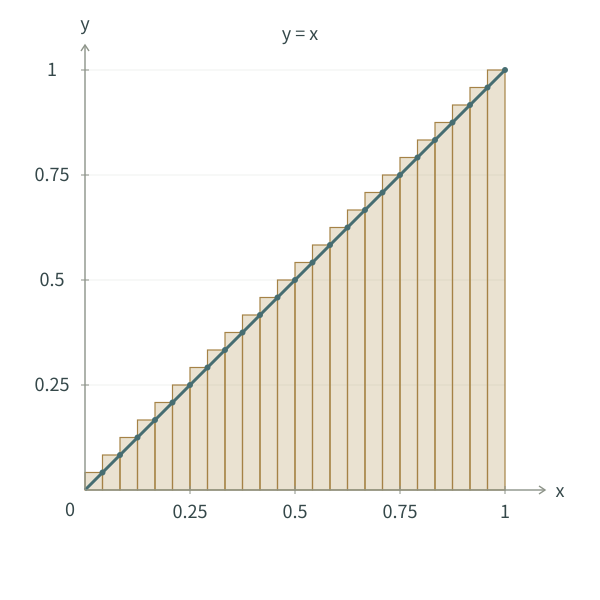
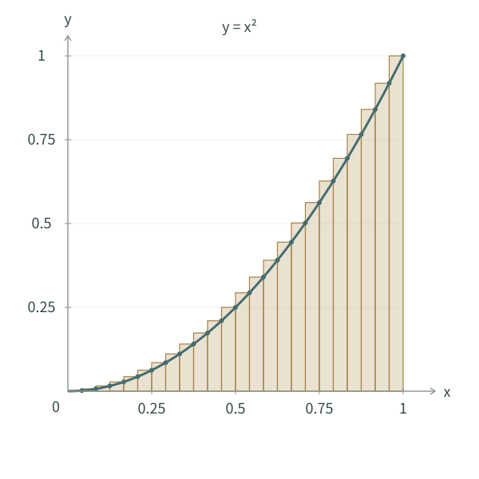
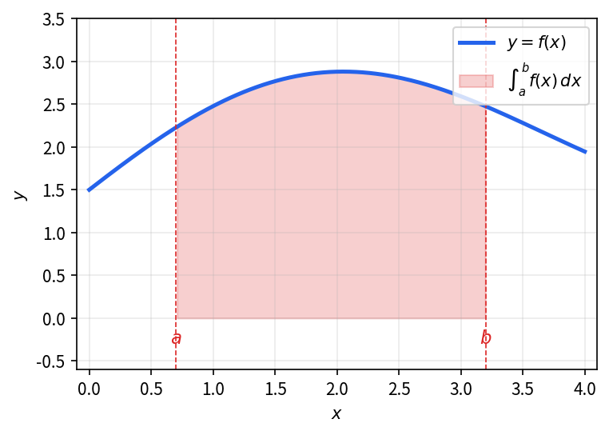
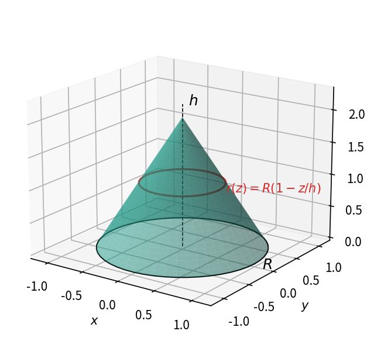
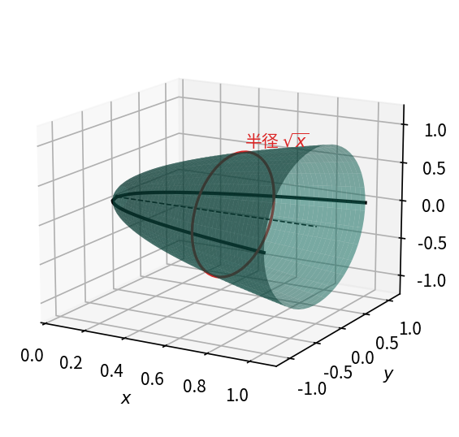
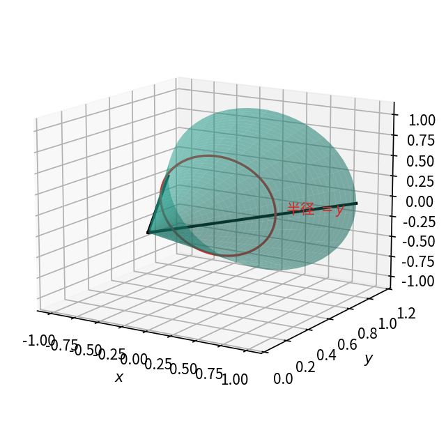
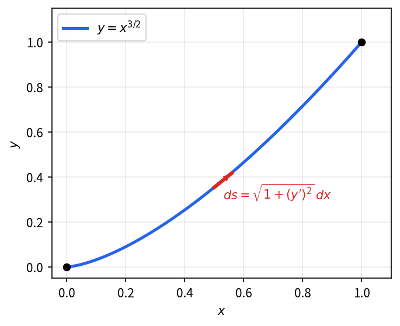
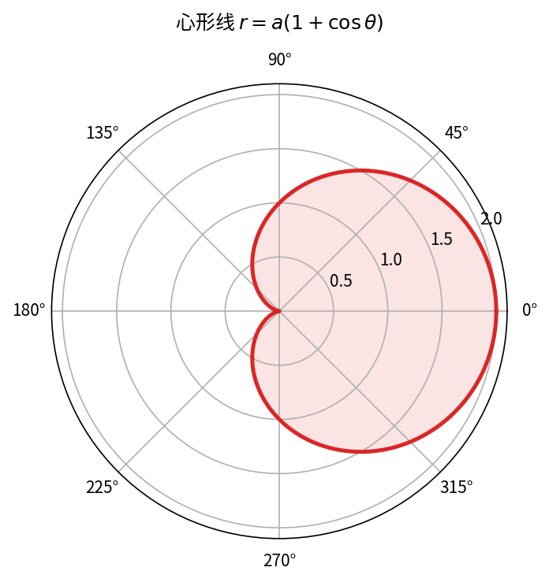
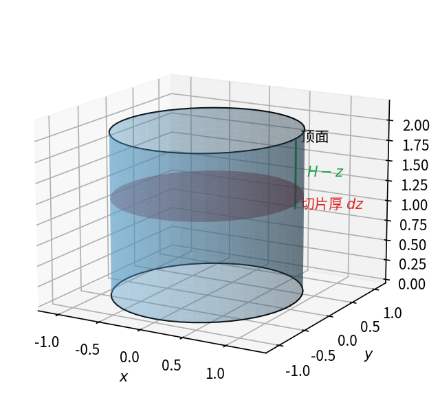

第一节 · 楔子
在微积分的发展历程中, 积分与微分如同一对孪生兄弟, 共同构成了现代数学的基石. 如果说微分研究的是函数在局部的瞬时变化率, 那么积分则致力于从整体上把握量的累积效应.
为什么要引入积分? 让我们从几个经典问题开始思考:
- 面积问题: 如何计算由任意曲线围成的平面图形的面积?
- 距离问题: 已知物体运动的速度随时间变化, 如何计算它在某段时间内走过的总路程?
- 体积问题: 如何计算旋转体或不规则立体的体积?
这些问题看似各异, 但本质上都涉及到一个共同的思想——“化整为零, 积零为整”. 我们将复杂的整体分解为无数个简单的微小部分, 分别计算每个微小部分的贡献, 然后将这些微小贡献累加起来, 当分割无限精细时, 就得到了精确的整体量.
积分不仅仅是一种计算工具, 更是一种思维方式. 它在物理学中用于计算功, 能量, 质心; 在工程学中用于分析应力, 流量; 在经济学中用于计算总收益, 消费者剩余; 在概率论中则是定义连续型随机变量概率密度的基础.
本章将带领大家沿着历史发展的轨迹, 首先建立积分的概念, 然后揭示积分与微分之间深刻的内在联系——微积分基本定理, 最后掌握计算积分的基本方法.
第二节 · 积零为整—积分的概念
我们还是从圆的面积出发。第一回中，我们用圆的内接正多边形的面积逼近圆的面积；现在换一种逼近的方法，用小矩形的面积之和逼近。
考虑一个半径为 \displaystyle\sqrt{2}、圆心在 \displaystyle(\sqrt{2},0) 的圆，取它的上半部分。圆的方程为 \displaystyle(x-\sqrt{2})^2+y^2=2，所以上半圆对应的函数为 \displaystyle y=f(x)=\sqrt{2-(x-\sqrt{2})^2}。
我们要计算它在区间 \displaystyle[0,2\sqrt{2}] 上与横轴围成的面积。由圆面积公式可知，这个半圆的面积为 \displaystyle\pi。下面看看，小矩形的面积之和怎样逼近这个结果。
第一步: 分割 将区间 \displaystyle [0, 2\sqrt{2}] 分成 \displaystyle n 个小区间, 设分点为: \displaystyle 0 = x_0 < x_1 < x_2 < \cdots < x_n = 2\sqrt{2} 每个小区间长度为 \displaystyle \Delta x_i = x_i - x_{i-1} 为简单起见, 我们可以采用等分, 即 \displaystyle\Delta x =\frac{(2\sqrt{2} - 0)}{n} = \frac{2\sqrt{2}}{n}
第二步: 近似代替 在每个小区间 \displaystyle [x_{i-1}, x_i] 上任取一点 \displaystyle \xi_i, 例如取右端点 \displaystyle \xi_i = x_i. 用高为 \displaystyle f(\xi_i) = \sqrt{2 - (\xi_i - \sqrt{2})^2}, 宽为 \displaystyle \Delta x 的小矩形面积 \displaystyle f(\xi_i)\Delta x 来近似代替该小区间上曲边梯形的面积.
第三步: 求和 将所有小矩形的面积相加, 得到整个曲边梯形面积的近似值: S_n = \sum_{i=1}^n f(\xi_i)\Delta x 这个和称为黎曼和(Riemann sum)。
第四步: 取极限 当分割越来越细, 即 \displaystyle n \to \infty 时, \displaystyle \Delta x \to 0, 如果黎曼和的极限存在, 我们就定义这个极限值为曲边梯形的面积: S = \lim_{n\to\infty} S_n = \lim_{n\to\infty} \sum_{i=1}^n f(\xi_i)\Delta x
设函数 \displaystyle f(x) 在区间 \displaystyle [a, b] 上有定义. 用分点 \displaystyle a = x_0 < x_1 < \cdots < x_n = b 将区间任意分割成 \displaystyle n 个小区间, 在每个小区间 \displaystyle [x_{i-1}, x_i] 上任取一点 \displaystyle \xi_i, 作黎曼和 \displaystyle \sum_{i=1}^n f(\xi_i)\Delta x_i.

如果当最大小区间长度 \displaystyle \lambda = \max\{\Delta x_i\} \to 0 时, 黎曼和的极限存在且与区间的分割方式以及点 \displaystyle \xi_i 的取法无关, 则称函数 \displaystyle f(x) 在 \displaystyle [a, b] 上可积, 并称此极限值为 \displaystyle f(x) 在 \displaystyle [a, b] 上的定积分, 记作:
\int_a^b f(x)\,dx = \lim_{\lambda\to 0} \sum_{i=1}^n f(\xi_i)\Delta x_i
其中:
- “\displaystyle\int” 是积分号, 由莱布尼茨引入, 是求和符号 “\displaystyle S” 的拉长
- \displaystyle f(x) 称为被积函数
- \displaystyle f(x)dx 称为被积表达式
- \displaystyle x 称为积分变量
- \displaystyle [a, b] 称为积分区间
- \displaystyle a 称为积分下限, \displaystyle b 称为积分上限
几何意义: 当 \displaystyle f(x) \geq 0 时, 定积分 \displaystyle\int_a^b f(x)\,dx 表示由曲线 \displaystyle y = f(x), 直线 \displaystyle x = a, \displaystyle x = b 与 \displaystyle x 轴所围成的曲边梯形的面积.
用定义（黎曼和极限）计算定积分 \displaystyle\int_0^1 x\,dx。
将 \displaystyle [0,1] 等分为 \displaystyle n 份，取每个小区间的右端点作为 \displaystyle \xi_i，写出黎曼和，利用等差数列求和公式化简，然后令 \displaystyle n\to\infty。
将 \displaystyle [0,1] \displaystyle n 等分，\displaystyle \Delta x = \dfrac{1}{n}，取 \displaystyle \xi_i = \dfrac{i}{n}（右端点）。
黎曼和为：
S_n = \sum_{i=1}^n \frac{i}{n} \cdot \frac{1}{n} = \frac{1}{n^2} \sum_{i=1}^n i = \frac{1}{n^2} \cdot \frac{n(n+1)}{2} = \frac{n+1}{2n}
令 \displaystyle n\to\infty：
\int_0^1 x\,dx = \lim_{n\to\infty} \frac{n+1}{2n} = \frac{1}{2}

用定义（黎曼和极限）计算定积分 \displaystyle\int_0^1 x^2\,dx。
将 \displaystyle [0,1] 等分为 \displaystyle n 份，取右端点，利用平方和公式 \displaystyle \sum_{i=1}^n i^2 = \dfrac{n(n+1)(2n+1)}{6} 化简黎曼和，令 \displaystyle n\to\infty。
将 \displaystyle [0,1] \displaystyle n 等分，\displaystyle \Delta x = \dfrac{1}{n}，取 \displaystyle \xi_i = \dfrac{i}{n}。
黎曼和为：
S_n = \sum_{i=1}^n \left(\frac{i}{n}\right)^2 \cdot \frac{1}{n} = \frac{1}{n^3} \sum_{i=1}^n i^2 = \frac{1}{n^3} \cdot \frac{n(n+1)(2n+1)}{6} = \frac{(n+1)(2n+1)}{6n^2}
令 \displaystyle n\to\infty：
\int_0^1 x^2\,dx = \lim_{n\to\infty} \frac{(n+1)(2n+1)}{6n^2} = \frac{1}{3}

当我们说积分相当于函数 \displaystyle f 的图像与 \displaystyle x 轴围成的面积时，需要注意：这个面积是有符号的。
如下图所示，在区间 I、III 中，\displaystyle f(x)>0，图像位于 \displaystyle x 轴上方，对积分的贡献为正，对应正面积；在区间 II 中，\displaystyle f(x)<0，图像位于 \displaystyle x 轴下方，对积分的贡献为负，对应负面积。

因此，整个区间上的积分相当于正、负面积相抵后的结果。
利用几何面积，分别求 \displaystyle\int_{-1}^1x\,dx，以及直线 \displaystyle y=x 与横轴在 \displaystyle[-1,1] 上围成的总面积。
左右两侧都是直角三角形。先计算各自的面积，再区分“积分”和“总面积”的符号。
左侧三角形在横轴下方，对积分的贡献为 \displaystyle-\frac12；右侧在横轴上方，贡献为 \displaystyle\frac12。因此
\int_{-1}^1x\,dx=-\frac12+\frac12=0.
总面积为 \displaystyle S=\frac12+\frac12=1。
前面用定义计算的两个例子表明，用定义计算积分虽然思路直接，但过程繁琐。 先了解定积分的基本性质，再借助微积分基本定理学习更方便的计算方法。
第三节 · 积分的性质
\boxed{\int_a^b[f(x)+g(x)]\,dx=\int_a^b f(x)\,dx+\int_a^b g(x)\,dx}

\boxed{\int_a^b f(x)\,dx=\int_a^c f(x)\,dx+\int_c^b f(x)\,dx}

注：规定 \displaystyle\int_a^a f(x)\,dx=0。结合积分区间的可加性，有
\int_a^b f(x)\,dx+\int_b^a f(x)\,dx=\int_a^a f(x)\,dx=0.
因而，交换积分上下限时，积分变号：
\boxed{\int_b^a f(x)\,dx=-\int_a^b f(x)\,dx}
\boxed{\int_a^b c\,f(x)\,dx=c\int_a^b f(x)\,dx,\;(c\text{ 为常数})}

\boxed{\left|\int_a^b f(x)\,dx\right|\leq\int_a^b|f(x)|\,dx,\;(a<b)}

左边先把正负贡献相加再取绝对值；右边把各部分的面积直接相加。
若 \displaystyle a<b，且在 \displaystyle[a,b] 上 \displaystyle f(x)\leq g(x)，则
\boxed{\int_a^b f(x)\,dx\leq\int_a^b g(x)\,dx}

设 \displaystyle a>0，函数 \displaystyle f 在 \displaystyle[-a,a] 上可积。
偶函数：若 \displaystyle f(-x)=f(x)，则
\boxed{\int_{-a}^{a}f(x)\,dx=2\int_0^a f(x)\,dx}

图像关于纵轴对称，左右两侧的带符号面积相等，因此只需算右边一半，再乘 \displaystyle2。
奇函数：若 \displaystyle f(-x)=-f(x)，则
\boxed{\int_{-a}^{a}f(x)\,dx=0}

图像关于原点对称，左右两侧对应的面积大小相等、符号相反，恰好抵消。
若可积函数 \displaystyle f 的周期为 \displaystyle T>0，则
\boxed{\int_a^{a+T}f(x)\,dx=\int_0^T f(x)\,dx}

图中以 \displaystyle0<a<T 为例，把积分区间从 \displaystyle[0,T] 平移到 \displaystyle[a,a+T]。由于周期性，左端移走的青色部分与右端补上的青色部分相等，所以一个周期内的积分与起点无关。
第四节 · 微积分基本定理
前面，我们通过黎曼和的极限定义了定积分，并了解了它的基本性质。 然而, 这种方法极其繁琐, 对于复杂函数几乎无法实际应用. 我们需要一种更高效, 更强大的工具来计算定积分.
微积分基本定理正是这样的工具, 它被誉为”整个微积分学中最重要的定理”. 这个定理的核心内容由牛顿和莱布尼茨在17世纪独立发现, 因此又被称为牛顿-莱布尼茨公式.
这两位数学巨匠的工作将积分学与微分学这两个看似独立的领域联系起来, 揭示了它们之间深刻的内在联系, 从而奠定了现代微积分的基础.
设函数 \displaystyle f 在区间 \displaystyle[a,b] 上连续，若 \displaystyle F'(x)=f(x)（这样的 \displaystyle F 称为 \displaystyle f 的一个原函数），则 \int_a^b f(x)\,dx = F(b) - F(a)
通常记作: \displaystyle\int_a^b f(x)\,dx = F(x)\big|_a^b = F(b) - F(a)
定理的直观证明
从几何上看，定积分 \displaystyle\int_a^b f(t)\,dt 表示曲线与横轴之间从 \displaystyle a 到 \displaystyle b 的带符号面积。定义函数 \displaystyle A(x)=\int_a^x f(t)\,dt，表示从 \displaystyle a 到 \displaystyle x 的累积面积。

自变量改变 \displaystyle\Delta x，累积面积的增量为 \displaystyle\Delta A=\int_x^{x+\Delta x}f(t)\,dt。由 \displaystyle f 的连续性，当 \displaystyle\Delta x 很小时，\displaystyle\Delta A\approx f(x)\Delta x，因此
A'(x)=\lim_{\Delta x\to0}\frac{\Delta A}{\Delta x}=f(x).
由于 \displaystyle A'=F'=f，两函数相差一个常数；又 \displaystyle A(a)=0，所以 \displaystyle A(x)=F(x)-F(a)。取 \displaystyle x=b，就得到
\int_a^b f(t)\,dt=A(b)=F(b)-F(a).
用微积分基本定理（牛顿-莱布尼茨公式）计算 \displaystyle\int_0^1 x^2\,dx。
求 \displaystyle f(x) = x^2 的一个原函数，然后代入上下限作差。
\displaystyle f(x) = x^2 的一个原函数为 \displaystyle F(x) = \dfrac{x^3}{3}。
由微积分基本定理：
\int_0^1 x^2\,dx = F(1) - F(0) = \frac{1}{3} - 0 = \frac{1}{3}
用微积分基本定理计算 \displaystyle\int_0^\pi \sin x\,dx。
\displaystyle \sin x 的原函数是 \displaystyle -\cos x，代入上下限计算。
\displaystyle \sin x 的一个原函数是 \displaystyle -\cos x。由微积分基本定理：
\int_0^\pi \sin x\,dx = [-\cos x]_0^\pi = -\cos\pi - (-\cos 0) = 1 + 1 = 2
用微积分基本定理计算 \displaystyle\int_1^e \frac{1}{x}\,dx。
\displaystyle \dfrac{1}{x} 的原函数是 \displaystyle \ln|x|，代入上下限计算。
\displaystyle \dfrac{1}{x} 的一个原函数是 \displaystyle \ln|x|。由微积分基本定理：
\int_1^e \frac{1}{x}\,dx = \ln e - \ln 1 = 1 - 0 = 1
这些例子展示了微积分基本定理的强大威力——它将复杂的极限计算简化为简单的代数运算.
第五节 · 不定积分的计算—换元法
求不定积分，就是寻找原函数（求导后得到被积函数的函数）。若 \displaystyle F'(x)=f(x)，记为 \displaystyle\int f(x)\,dx=F(x)+C，其中 \displaystyle C 为任意常数。
换元积分法源于链式法则的逆运算, 是计算积分最强大的工具之一.
基本思想: 通过变量代换, 将复杂的积分转化为简单的积分.
定理: 设函数 \displaystyle f 在区间 \displaystyle I 上连续, 函数 \displaystyle \varphi 在区间 \displaystyle J 上可导且值域包含于 \displaystyle I, 则 \int f(\varphi(x))\varphi'(x)\,dx = \int f(u)\,du,\quad u = \varphi(x)
直观解释：若 \displaystyle F'=f，由链式法则，\displaystyle[F(\varphi(x))]'=F'(\varphi(x))\cdot\varphi'(x)=f(\varphi(x))\varphi'(x)。 因此，\displaystyle\int f(\varphi(x))\varphi'(x)\,dx=F(\varphi(x))+C，这正是 \displaystyle\int f(u)\,du 在 \displaystyle u=\varphi(x) 时的结果。
计算不定积分 \displaystyle\int 2x\cos(x^2)\,dx。
令 \displaystyle u = x^2，则 \displaystyle du = 2x\,dx，将复合函数变换为对 \displaystyle \cos u 的积分。
令 \displaystyle u = x^2，则 \displaystyle du = 2x\,dx。
\int 2x\cos(x^2)\,dx = \int \cos u\,du = \sin u + C = \sin(x^2) + C
计算不定积分 \displaystyle\int x\sqrt{x^2+1}\,dx。
令 \displaystyle u = x^2+1，则 \displaystyle du = 2x\,dx，将被积式化为 \displaystyle \sqrt{u} 的积分。
令 \displaystyle u = x^2+1，则 \displaystyle du = 2x\,dx，即 \displaystyle x\,dx = \dfrac{du}{2}。
\int x\sqrt{x^2+1}\,dx = \int \sqrt{u} \cdot \frac{du}{2} = \frac{1}{2}\int u^{1/2}\,du = \frac{1}{2} \cdot \frac{2}{3} u^{3/2} + C = \frac{1}{3}(x^2+1)^{3/2} + C
第六节 · 不定积分的计算—分部积分法
分部积分法源于乘积求导法则的逆运算, 适用于计算两个函数乘积的积分.
基本思想: 将难以直接计算的积分 \displaystyle \int u\,dv 转化为更容易计算的 \displaystyle\int v\,du
公式: \displaystyle\int u\,dv = uv - \int v\,du
直观解释: 乘积法则告诉我们 \displaystyle (uv)' = u'v + uv' 两边积分得: \displaystyle uv = \displaystyle\int u'v dx + \displaystyle\int uv' dx 整理得: \displaystyle\int uv' dx = uv - \int u'v dx 这就是分部积分公式.
计算不定积分 \displaystyle\int x e^x\,dx。
令 \displaystyle u = x，\displaystyle dv = e^x\,dx，应用分部积分公式 \displaystyle \int u\,dv = uv - \int v\,du。
令 \displaystyle u = x，\displaystyle dv = e^x\,dx，则 \displaystyle du = dx，\displaystyle v = e^x。
\int x e^x\,dx = x e^x - \int e^x\,dx = x e^x - e^x + C = (x-1)e^x + C
计算不定积分 \displaystyle\int \ln x\,dx。
令 \displaystyle u = \ln x，\displaystyle dv = dx，这样 \displaystyle du = \dfrac{1}{x}\,dx，\displaystyle v = x，应用分部积分。
令 \displaystyle u = \ln x，\displaystyle dv = dx，则 \displaystyle du = \dfrac{1}{x}\,dx，\displaystyle v = x。
\int \ln x\,dx = x\ln x - \int x \cdot \frac{1}{x}\,dx = x\ln x - \int dx = x\ln x - x + C
第七节 · 定积分的计算
定积分的计算可以使用与不定积分相同的方法, 但有一些重要区别:
与不定积分的换元法相比, 定积分的换元法有一个重要特点: 需要同时改变积分限.
定理: 设函数 \displaystyle f 在区间 \displaystyle [a, b] 上连续, 函数 \displaystyle \varphi 在区间 \displaystyle [\alpha, \beta] 上具有连续导数, 且 \displaystyle \varphi(\alpha) = a, \varphi(\beta) = b，其值在整个区间上均落在 \displaystyle[a,b] 内，则 \int_a^b f(x)\,dx = \int_\alpha^\beta f(\varphi(t))\varphi'(t)\,dt
关键区别: 在定积分中使用换元法时, 不仅要进行变量代换, 还要相应地改变积分上下限.
计算定积分 \displaystyle\int_0^{\pi/2} \sin^2 x \cos x\,dx。
令 \displaystyle u = \sin x，则 \displaystyle du = \cos x\,dx，同时将积分限从 \displaystyle x 变换为 \displaystyle u。
令 \displaystyle u = \sin x，则 \displaystyle du = \cos x\,dx。
当 \displaystyle x = 0 时，\displaystyle u = 0；当 \displaystyle x = \dfrac{\pi}{2} 时，\displaystyle u = 1。
\int_0^{\pi/2} \sin^2 x \cos x\,dx = \int_0^1 u^2\,du = \frac{u^3}{3}\bigg|_0^1 = \frac{1}{3}
计算定积分 \displaystyle\int_1^4 \frac{\sqrt{x}}{1+\sqrt{x}}\,dx。
令 \displaystyle u = 1+\sqrt{x}，则 \displaystyle \sqrt{x} = u-1，\displaystyle dx = 2(u-1)\,du，记得同步换算积分限，再将有理函数做多项式除法后逐项积分。
令 \displaystyle u = 1+\sqrt{x}，则 \displaystyle du = \dfrac{1}{2\sqrt{x}}\,dx，即 \displaystyle dx = 2(u-1)\,du。
当 \displaystyle x = 1 时，\displaystyle u = 2；当 \displaystyle x = 4 时，\displaystyle u = 3。
\int_1^4 \frac{\sqrt{x}}{1+\sqrt{x}}\,dx = \int_2^3 \frac{u-1}{u} \cdot 2(u-1)\,du = 2\int_2^3 \frac{(u-1)^2}{u}\,du
展开并化简：
= 2\int_2^3 \left(u - 2 + \frac{1}{u}\right)du = 2\left[\frac{u^2}{2} - 2u + \ln|u|\right]_2^3
= \left[u^2 - 4u + 2\ln u\right]_2^3 = (9 - 12 + 2\ln 3) - (4 - 8 + 2\ln 2)
= 1 + 2\ln\frac{3}{2}
定积分的分部积分法与不定积分类似, 但结果是一个数值而非函数.
公式: \displaystyle\int_a^b u\,dv = [uv]_a^b - \int_a^b v\,du
关键区别: 在定积分的分部积分法中, \displaystyle uv 项需要代入上下限计算.
计算定积分 \displaystyle\int_0^1 x e^x\,dx。
令 \displaystyle u = x，\displaystyle dv = e^x\,dx，应用定积分的分部积分公式，注意 \displaystyle uv 项需代入上下限。
令 \displaystyle u = x，\displaystyle dv = e^x\,dx，则 \displaystyle du = dx，\displaystyle v = e^x。
\int_0^1 x e^x\,dx = [x e^x]_0^1 - \int_0^1 e^x\,dx = (e - 0) - [e^x]_0^1 = e - (e - 1) = 1
计算定积分 \displaystyle\int_1^e \ln x\,dx。
令 \displaystyle u = \ln x，\displaystyle dv = dx，应用定积分的分部积分公式，\displaystyle uv 项代入上下限 \displaystyle [1, e]。
令 \displaystyle u = \ln x，\displaystyle dv = dx，则 \displaystyle du = \dfrac{1}{x}\,dx，\displaystyle v = x。
\int_1^e \ln x\,dx = [x\ln x]_1^e - \int_1^e x \cdot \frac{1}{x}\,dx = (e \cdot 1 - 1 \cdot 0) - \int_1^e dx = e - [x]_1^e = e - (e-1) = 1
第八节 · 打上凌霄宝殿—微元法
微元法是积分学中解决几何与物理问题的核心思想, 它将复杂的整体问题分解为无穷多个简单的局部问题.
基本思路:
- 分割: 将所求的整体量对应的区域分割成许多微小部分
- 近似: 在每个微小部分上, 用简单的几何量近似代替复杂的实际量
- 求和取极限: 将所有微小部分的近似值相加, 然后通过取极限得到精确值
如果要求整体量 \displaystyle Q, 先找出微元 \displaystyle dQ = f(x)dx, 然后通过积分得到 Q = \int_a^b dQ = \int_a^b f(x)dx
设 \displaystyle f 在 \displaystyle[a,b] 上连续且非负，求曲线 \displaystyle y=f(x)、直线 \displaystyle x=a、\displaystyle x=b 与横轴围成的面积。

利用微元法：将区间 \displaystyle [a,b] 分成若干小区间，在每个小区间 \displaystyle [x, x+dx] 上用矩形近似面积微元，再求和取极限。
利用微元法：
- 分割：将 \displaystyle [a,b] 分成 \displaystyle n 个小区间；
- 近似：每个小区间 \displaystyle [x, x+dx] 上的面积微元为 \displaystyle dA = f(x)dx；
- 求和取极限：
A = \int_a^b f(x)\,dx
体积的计算
计算底面积为 \displaystyle A，高为 \displaystyle h 的棱柱体积。
利用截面法：棱柱所有截面面积相同，直接积分。
所有截面面积均为 \displaystyle A，故
V = \int_0^h A\,dx = Ah.
计算底半径为 \displaystyle R，高为 \displaystyle h 的圆锥体积。

按图中从底面到顶点的方向取坐标，利用相似三角形求截面半径。
以底面为 \displaystyle x=0，顶点为 \displaystyle x=h。截面半径为 \displaystyle r(x)=R\left(1-\frac{x}{h}\right)，所以
V=\pi R^2\int_0^h\left(1-\frac{x}{h}\right)^2\,dx=\frac13\pi R^2h.
曲线 \displaystyle y = f(x) 绕 \displaystyle x 轴旋转一周形成的旋转体体积: V = \int_a^b \pi [f(x)]^2 dx
推导: 在 \displaystyle x 处垂直于 \displaystyle x 轴的截面是半径为 \displaystyle f(x) 的圆盘, 面积 \displaystyle A(x) = \pi [f(x)]^2
计算曲线 \displaystyle y = \sqrt{x} 在 \displaystyle [0,1] 上绕 \displaystyle x 轴旋转一周所形成的旋转体体积。

用旋转体体积公式 \displaystyle V = \displaystyle\int_a^b \pi [f(x)]^2\,dx。
V = \int_0^1 \pi(\sqrt{x})^2\,dx = \pi\int_0^1 x\,dx = \pi \cdot \frac{1}{2} = \frac{\pi}{2}.
曲线 \displaystyle y = f(x) 绕 \displaystyle y 轴旋转一周形成的旋转体体积: V = \int_a^b 2\pi x f(x) dx
推导: 在 \displaystyle x 处厚度为 \displaystyle dx 的柱壳体积微元 \displaystyle dV = 2\pi x \cdot f(x) \cdot dx
求直线 \displaystyle y=x、\displaystyle y 轴和直线 \displaystyle y=1 围成的区域绕 \displaystyle y 轴旋转一周所得的体积。

沿高度切片，在高度 \displaystyle y 处的截面是半径为 \displaystyle y 的圆。
以 \displaystyle y 为积分变量，截面面积为 \displaystyle\pi y^2，所以
V=\int_0^1\pi y^2\,dy=\frac\pi3.
也可以用柱壳法：半径为 \displaystyle x 的薄壳高度为 \displaystyle1-x，因此
V=\int_0^1 2\pi x(1-x)\,dx=\frac\pi3.
曲线弧长
曲线 \displaystyle y = f(x) 在 \displaystyle [a,b] 上的弧长: L = \int_a^b \sqrt{1 + [f'(x)]^2} dx
推导: 弧长微元 \displaystyle ds = \sqrt{(dx)^2 + (dy)^2} = \sqrt{1 + \left(\frac{dy}{dx}\right)^2} dx
计算曲线 \displaystyle y = x^{3/2} 从 \displaystyle x=0 到 \displaystyle x=1 的弧长。

用弧长公式 \displaystyle L = \displaystyle\int_0^1 \sqrt{1 + [f'(x)]^2}\,dx，令 \displaystyle u = 1 + \dfrac{9}{4}x 换元求积分。
\displaystyle f'(x) = \dfrac{3}{2}x^{1/2}，故
L = \int_0^1 \sqrt{1 + \frac{9}{4}x}\,dx.
令 \displaystyle u = 1 + \dfrac{9}{4}x，则 \displaystyle du = \dfrac{9}{4}dx；当 \displaystyle x=0 时 \displaystyle u=1，当 \displaystyle x=1 时 \displaystyle u=\dfrac{13}{4}。
L = \frac{4}{9}\int_1^{13/4} \sqrt{u}\,du = \frac{4}{9} \cdot \frac{2}{3}u^{3/2}\Big|_1^{13/4} = \frac{8}{27}\left[\left(\frac{13}{4}\right)^{3/2} - 1\right].
曲线由参数方程 \displaystyle x = x(t), y = y(t) (\displaystyle \alpha \leq t \leq \beta) 给出时, 弧长为: L = \int_\alpha^\beta \sqrt{\left(\frac{dx}{dt}\right)^2 + \left(\frac{dy}{dt}\right)^2} dt
用参数方程下的弧长公式计算半径为 \displaystyle R 的圆的周长。
圆的参数方程为 \displaystyle x = R\cos t，\displaystyle y = R\sin t（\displaystyle 0 \leq t \leq 2\pi），代入参数弧长公式。
\frac{dx}{dt} = -R\sin t, \quad \frac{dy}{dt} = R\cos t.
L = \int_0^{2\pi} \sqrt{(-R\sin t)^2 + (R\cos t)^2}\,dt = \int_0^{2\pi} R\,dt = 2\pi R.
曲线由极坐标方程 \displaystyle r = r(\theta) (\displaystyle \alpha \leq \theta \leq \beta) 给出时, 弧长为: L = \int_\alpha^\beta \sqrt{[r(\theta)]^2 + \left[\frac{dr}{d\theta}\right]^2} d\theta
推导: 利用直角坐标与极坐标的关系 \displaystyle x = r\cos\theta, y = r\sin\theta, 代入参数方程的弧长公式可得.
计算心形线 \displaystyle r = a(1+\cos\theta)（\displaystyle 0 \leq \theta \leq 2\pi）的周长。

用极坐标弧长公式 \displaystyle L = \displaystyle\int_0^{2\pi} \sqrt{r^2 + (r')^2}\,d\theta，利用半角公式 \displaystyle 1+\cos\theta = 2\cos^2(\theta/2) 化简被积函数。
\displaystyle \dfrac{dr}{d\theta} = -a\sin\theta，故
L = \int_0^{2\pi} \sqrt{a^2(1+\cos\theta)^2 + a^2\sin^2\theta}\,d\theta = a\int_0^{2\pi}\sqrt{2+2\cos\theta}\,d\theta.
利用 \displaystyle 1+\cos\theta = 2\cos^2(\theta/2)：
L = a\int_0^{2\pi} 2\left|\cos\frac{\theta}{2}\right|d\theta = 4a\int_0^{\pi}\cos\frac{\theta}{2}\,d\theta = 8a.
做功的计算
在物理学中, 力沿路径做的功定义为力与位移的乘积. 当力是变力时, 需要用积分计算.
有限区域内的变力做功
弹簧压缩做功：根据胡克定律，弹性系数为 \displaystyle k 的弹簧，将弹簧从平衡位置压缩 \displaystyle L 距离，求所做的功。
弹簧力 \displaystyle F(x) = kx，对力沿压缩方向积分。
W = \int_0^L kx\,dx = \frac{1}{2}kL^2.
抽水做功：设圆柱形水箱半径为 \displaystyle R，高为 \displaystyle H，装满密度为 \displaystyle \rho 的液体，求将液体全部抽出水箱顶部所需做的功。

将水箱沿高度方向分层，距底面高度 \displaystyle x 处的薄层需提升距离为 \displaystyle H-x，建立积分。
距底面高度 \displaystyle x 处厚度为 \displaystyle dx 的水层的质量为 \displaystyle \rho\pi R^2\,dx，需提升距离 \displaystyle H-x，故功微元为
dW = \rho\pi R^2(H-x)\,g\,dx.
总功为
W = \int_0^H \rho g\pi R^2(H-x)\,dx = \rho g\pi R^2 \cdot \frac{H^2}{2} = \frac{1}{2}\rho g\pi R^2 H^2.
第九节 · 回望来路
前两回，我们用极限把握变量的去向，用导数研究函数的变化。这一回，我们学会了另一种看问题的方式：把整体分成许多小部分，看清每一小部分的贡献，再通过求和与极限得到整体。 这就是“化整为零，积零为整”。
定积分从小矩形的面积之和出发，描述一个区间上的累积量。微积分基本定理则揭示了它与导数的联系：找到被积函数的原函数，就能用两个端点的函数值之差计算定积分。
\int_a^b f(x)\,dx=F(b)-F(a),\qquad F'(x)=f(x).
换元法与分部积分法，都在借用上一回的本领：前者逆用链式法则，后者逆用乘积求导法则。换元时，要把被积式与微分一起处理；计算定积分时，还要把上下限换成新变量对应的值。
打上凌霄宝殿，靠的是微元法。面对体积、弧长与功这些不同的问题，我们反复做着同样的事：选择分割变量，写出微元，确定积分范围，再累积求解。 公式各不相同，背后的思路却是一条。

回看篇首荀子的“不积跬步，无以至千里”，一小步与千里之间，藏着的正是累积的力量。积分让我们不只看到整体有多大，还能说清楚：这个整体，是怎样一点一点积起来的。
这一路，我们从局部累积出整体。下一回换一个方向：用某一点的变化率理解整个区间，用多项式近似复杂函数，再从变化规律寻找未知的函数。